Next: 6.2 Optimisation of a Up: 6. Model-free analysis Previous: 6. Model-free analysis Contents Index
For the minimisation of the model-free models a chain of calculations, each based on a different theory, is required. At the highest level the equation which is actually minimised is the chi-squared function
where the index 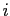
is the summation index ranging over all the experimentally collected relaxation data of all residues used in the analysis;
 belongs to the relaxation data set R for an individual residue, a collection of residues, or the entire macromolecule and includes the
belongs to the relaxation data set R for an individual residue, a collection of residues, or the entire macromolecule and includes the
 ,
,
 , and NOE data at all field strengths;
, and NOE data at all field strengths;
 is the back-calculated relaxation value belonging to the set R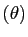
;
is the back-calculated relaxation value belonging to the set R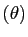
;  is the model parameter vector which when minimised is denoted by
is the model parameter vector which when minimised is denoted by
 ; and 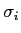
is the experimental error.
; and 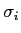
is the experimental error.
The significance of the chi-squared equation (6.1) is that the function returns a single value which is then minimised by the optimisation algorithm to find the model-free parameter values of the given model.
The chi-squared equation is itself dependent on the relaxation equations through the back-calculated relaxation data R
. Letting the relaxation values of the set R
be the
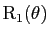
,
 , and NOE
an additional layer of abstraction can be used to simplify the calculation of the gradients and Hessians. This involves decomposing the NOE equation into the cross relaxation rate constant
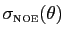
and the auto relaxation rate
. Taking equation (6.6) below the transformed relaxation equations are
, and NOE
an additional layer of abstraction can be used to simplify the calculation of the gradients and Hessians. This involves decomposing the NOE equation into the cross relaxation rate constant
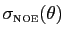
and the auto relaxation rate
. Taking equation (6.6) below the transformed relaxation equations are
 |
whereas the relaxation equations are the
,
 ,
.
,
.
The relaxation values of the set R include the spin-lattice, spin-spin, and cross-relaxation rates at all field strengths. These rates are respectively (Abragam, 1961)
include the spin-lattice, spin-spin, and cross-relaxation rates at all field strengths. These rates are respectively (Abragam, 1961)
where
is the power spectral density function and  is the relaxation due to chemical exchange. The dipolar and CSA constants are defined in SI units as
is the relaxation due to chemical exchange. The dipolar and CSA constants are defined in SI units as
where 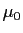
is the permeability of free space,
and
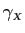
are the gyromagnetic ratios of the  and 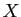
spins respectively,
is Plank's constant divided by 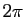
, 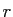
is the bond length, and
and 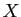
spins respectively,
is Plank's constant divided by 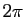
, 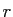
is the bond length, and
 is the chemical shift anisotropy measured in ppm. The cross-relaxation rate
is the chemical shift anisotropy measured in ppm. The cross-relaxation rate
 is related to the steady state NOE by the equation
is related to the steady state NOE by the equation
The relaxation equations are themselves dependent on the calculation of the spectral density values . Within model-free analysis these are modelled by the original model-free formula (Lipari and Szabo, 1982b,a)
where  is the square of the Lipari and Szabo generalised order parameter and
is the square of the Lipari and Szabo generalised order parameter and  is the effective correlation time. The order parameter reflects the amplitude of the motion and the correlation time in an indication of the time scale of that motion. The theory was extended by Clore et al. (1990) by the modelling of two independent internal motions using the equation
is the effective correlation time. The order parameter reflects the amplitude of the motion and the correlation time in an indication of the time scale of that motion. The theory was extended by Clore et al. (1990) by the modelling of two independent internal motions using the equation
where  and
and  are the amplitude and timescale of the faster of the two motions whereas
are the amplitude and timescale of the faster of the two motions whereas  and
and  are those of the slower motion.
are those of the slower motion.  and
and  are related by the formula
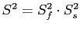
.
are related by the formula
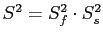
.
In equations (6.7) and (6.8) the generic Brownian diffusion NMR correlation function presented in d'Auvergne (2006) has been used. This function is
where the summation index ranges over the number of exponential terms within the correlation function. This equation is generic in that it can describe the diffusion of an ellipsoid, a spheroid, or a sphere.
For the ellipsoid defined by the parameter set {
 ,
,
 ,
,
 ,
,  ,
,  ,
,  } the variable 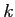
is equal to two and therefore the index
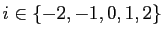
. The geometric parameters {
} the variable 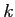
is equal to two and therefore the index
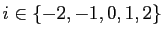
. The geometric parameters {
 ,
,
 ,
,
 } are defined as
} are defined as
and are constrained by
The orientational parameters { ,
,  ,
,  } are the Euler angles using the z-y-z rotation notation.
} are the Euler angles using the z-y-z rotation notation.
The five weights 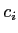 are defined as
where
and where
| (theparentequation.14) |
The five correlation times 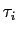 are
The variable
is equal to one in the case of the spheroid defined by the parameter set {
 ,
,
 ,
,  ,
,  }, hence
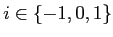
. The geometric parameters {
}, hence
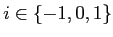
. The geometric parameters {
 ,
,
 } are defined as
} are defined as
and are constrained by
 |
The orientational parameters { ,
,  } are the spherical angles defining the orientation of the major axis of the diffusion frame within the lab frame.
} are the spherical angles defining the orientation of the major axis of the diffusion frame within the lab frame.
The three weights are
The five correlation times are
In the situation of a molecule diffusing as a sphere either described by the single parameter  or
or
 , the variable
is equal to zero. Therefore
, the variable
is equal to zero. Therefore
 . The single weight
. The single weight  is equal to one and the single correlation time 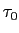
is equivalent to the global tumbling time
is equal to one and the single correlation time 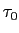
is equivalent to the global tumbling time  given by
given by
This is diffusion equation presented in Bloembergen et al. (1948).
Extending the list of models given in Zhuravleva et al. (2004); Orekhov et al. (1999); Fushman et al. (1997); Mandel et al. (1995); Korzhnev et al. (2001), the models built into relax include
The parameter  is scaled quadratically with field strength in these models as it is assumed to be fast. In the set theory notation, the model-free model for the spin system
is represented by the symbol
is scaled quadratically with field strength in these models as it is assumed to be fast. In the set theory notation, the model-free model for the spin system
is represented by the symbol
 . Through the addition of the local
. Through the addition of the local  to each of these models, only the component of Brownian rotational diffusion experienced by the spin system is probed. These models, represented in set notation by the symbol
to each of these models, only the component of Brownian rotational diffusion experienced by the spin system is probed. These models, represented in set notation by the symbol
 , are
, are
The optimisation of the parameters of an arbitrary model is dependent on a function 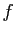
which takes the current parameter values
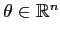
and returns a single real value
 corresponding to position
corresponding to position  in the 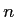
-dimensional space. For it is that single value which is minimised as
in the 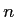
-dimensional space. For it is that single value which is minimised as
| 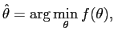 | (theparentequation.23) |
where
 is the parameter vector which is equal to the argument which minimises the function 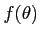
. In model-free analysis
is the chi-squared equation
is the parameter vector which is equal to the argument which minimises the function 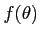
. In model-free analysis
is the chi-squared equation
where
is the summation index,
 is the experimental relaxation data which belongs to the data set R and includes the
is the experimental relaxation data which belongs to the data set R and includes the
 ,
,
 , and NOE values at all field strengths,
, and NOE values at all field strengths,
 is the back calculated relaxation data belonging to the set R
, and
is the experimental error. For the optimisation of the model-free parameters while the diffusion tensor is held fixed, the summation index ranges over the relaxation data of an individual residue. If the diffusion parameters are optimised simultaneously with the model-free parameters the summation index ranges over all relaxation data of all selected residues of the macromolecule.
is the back calculated relaxation data belonging to the set R
, and
is the experimental error. For the optimisation of the model-free parameters while the diffusion tensor is held fixed, the summation index ranges over the relaxation data of an individual residue. If the diffusion parameters are optimised simultaneously with the model-free parameters the summation index ranges over all relaxation data of all selected residues of the macromolecule.
Given the current parameter values the model-free function provided to the algorithm will calculate the value of the model-free spectral density function
at the five frequencies which induce NMR relaxation by using Equations (6.7) and (6.8). The theoretical
 ,
,
 , and NOE values are then back-calculated using Equations (6.3a), (6.3b), (6.3c), and (6.6). Finally, the chi-squared value is calculated using Equation (6.25).
, and NOE values are then back-calculated using Equations (6.3a), (6.3b), (6.3c), and (6.6). Finally, the chi-squared value is calculated using Equation (6.25).
The problem of finding the minimum is complicated by the fact that optimisation algorithms are blind to the curvature of the complete space. Instead they rely on topological information about the current and, sometimes, the previous parameter positions in the space. The techniques use this information to walk iteratively downhill to the minimum. Very few optimisation algorithms rely solely on the function value, conceptually the height of the space, at the current position. Most techniques also utilise the gradient at the current position. Although symbolically complex in the case of model-free analysis, the gradient can simply be calculated as the vector of first partial derivatives of the chi-squared equation with respect to each model-free parameter. The gradient is supplied as a second function to the algorithm which is then utilised in diverse ways by different optimisation techniques. The function value together with the gradient can be combined to construct a linear or planar description of the space at the current parameter position by first-order Taylor series approximation
where  is the function value at the current parameter position
is the function value at the current parameter position  ,
,
 is the gradient at the same position, and
is the gradient at the same position, and  is an arbitrary vector. By accumulating information from previous parameter positions a more comprehensive geometric description of the curvature of the space can be exploited by the algorithm for more efficient optimisation.
is an arbitrary vector. By accumulating information from previous parameter positions a more comprehensive geometric description of the curvature of the space can be exploited by the algorithm for more efficient optimisation.
The best and most comprehensive description of the space is given by the quadratic approximation of the topology which is generated from the combination of the function value, the gradient, and the Hessian. From the second-order Taylor series expansion the quadratic model of the space is
where
 is the Hessian, which is the symmetric matrix of second partial derivatives of the function, at the position
is the Hessian, which is the symmetric matrix of second partial derivatives of the function, at the position  . As the Hessian is computationally expensive a number of optimisation algorithms try to approximate it.
. As the Hessian is computationally expensive a number of optimisation algorithms try to approximate it.
To produce the gradient and Hessian required for model-free optimisation a large chain of first and second partial derivatives needs to be calculated. Firstly the partial derivatives of the spectral density functions (6.7) and (6.8) are necessary. Then the partial derivatives of the relaxation equations (6.3a) to (6.3c) followed by the NOE equation (6.6) are needed. Finally the partial derivative of the chi-squared formula (6.25) is required. These first and second partial derivatives, as well as those of the components of the Brownian diffusion correlation function for non-isotropic tumbling, are presented in Chapter 8.
Prior to minimisation, all optimisation algorithms investigated require a starting position within the model-free space. This initial parameter vector is found by employing a coarse grid search - chi-squared values at regular positions spanning the space are calculated and the grid point with the lowest value becomes the starting position. The grid search itself is an optimisation technique. As it is computationally expensive the number of grid points needs to be kept to a minimum. Hence the initial parameter values are a rough and imprecise approximation of the local minimum. Due to the complexity of the curvature of the model-free space, the grid point with the lowest chi-squared value may in fact be on the opposite side of the space to the local minimum.
Once the starting position has been determined by the grid search the optimisation algorithm can be executed. The number of algorithms developed within the mathematical field of optimisation is considerable. They can nevertheless be grouped into one of a small number of major categories based on the fundamental principles of the technique. These include the line search methods, the trust region methods, and the conjugate gradient methods. For more details on the algorithms described below see Nocedal and Wright (1999).
The defining characteristic of a line search algorithm is to choose a search direction  and then to find the minimum along that vector starting from
and then to find the minimum along that vector starting from  (Nocedal and Wright, 1999). The distance travelled along
(Nocedal and Wright, 1999). The distance travelled along  is the step length 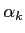
and the parameter values for the next iteration are
is the step length 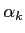
and the parameter values for the next iteration are
| 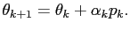 | (theparentequation.27) |
The line search algorithm determines the search direction  whereas the value of
is found using an auxiliary step-length selection algorithm.
whereas the value of
is found using an auxiliary step-length selection algorithm.
One of the simplest line search methods is the steepest descent algorithm. The search direction is simply the negative gradient,
 , and hence the direction of maximal descent is always followed. This method is inefficient - the linear rate of convergence requires many iterations of the algorithm to reach the minimum and it is susceptible to being trapped on saddle points within the space.
, and hence the direction of maximal descent is always followed. This method is inefficient - the linear rate of convergence requires many iterations of the algorithm to reach the minimum and it is susceptible to being trapped on saddle points within the space.
The coordinate descent algorithms are a simplistic group of line search methods whereby the search directions alternate between vectors parallel to the parameter axes. For the back-and-forth coordinate descent the search directions cycle in one direction and then back again. For example for a three parameter model the search directions cycle 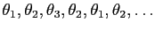 , which means that each parameter of the model is optimised one by one. The method becomes less efficient when approaching the minimum as the step length continually decreases (ibid.).
The quasi-Newton methods begin with an initial guess of the Hessian and update it at each iteration using the function value and gradient. Therefore the benefits of using the quadratic model of (6.27) are obtained without calculating the computationally expensive Hessian. The Hessian approximation 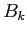 is updated using various formulae, the most common being the BFGS formula (Broyden, 1970; Goldfarb, 1970; Shanno, 1970; Fletcher, 1970). The search direction is given by the equation 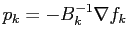 . The quasi-Newton algorithms can attain a superlinear rate of convergence, being superior to the steepest descent or coordinate descent methods.
The most powerful line search method when close to the minimum is the Newton search direction
This direction is obtained from the derivative of (6.27) which is assumed to be zero at the minimum of the quadratic model. The vector  points from the current position to the exact minimum of the quadratic model of the space. The rate of convergence is quadratic, being superior to both linear and superlinear convergence. The technique is computationally expensive due to the calculation of the Hessian. It is also susceptible to failure when optimisation commences from distant positions in the space as the Hessian may not be positive definite and hence not convex, a condition required for the search direction both to point downhill and to be reasonably oriented. In these cases the quadratic model is a poor description of the space.
points from the current position to the exact minimum of the quadratic model of the space. The rate of convergence is quadratic, being superior to both linear and superlinear convergence. The technique is computationally expensive due to the calculation of the Hessian. It is also susceptible to failure when optimisation commences from distant positions in the space as the Hessian may not be positive definite and hence not convex, a condition required for the search direction both to point downhill and to be reasonably oriented. In these cases the quadratic model is a poor description of the space.
A practical Newton algorithm which is robust for distant starting points is the Newton conjugate gradient method (Newton-CG). This line search method, which is also called the truncated Newton algorithm, finds an approximate solution to Equation (6.29) by using a conjugate gradient (CG) sub-algorithm. Retaining the performance of the pure Newton algorithm, the CG sub-algorithm guarantees that the search direction is always downhill as the method terminates when negative curvature is encountered. This algorithm is similar to the Newton-Raphson-CG algorithm implemented within Dasha. Newton optimisation is sometimes also known as the Newton-Raphson algorithm and, as documented in the source code, the Newton algorithm in Dasha is coupled to a conjugate gradient algorithm. The auxiliary step-length selection algorithm in Dasha is undocumented and may not be employed.
Once the search direction has been determined by the above algorithms the minimum along that direction needs to be determined. Not to be confused with the methodology for determining the search direction  , the line search itself is performed by an auxiliary step-length selection algorithm to find the value
. A number of step-length selection methods can be used to find a minimum along the line
, the line search itself is performed by an auxiliary step-length selection algorithm to find the value
. A number of step-length selection methods can be used to find a minimum along the line
 , although only two will be investigated. The first is the backtracking line search of Nocedal and Wright (1999). This method is inexact - it takes a starting step length
and decreases the value until a sufficient decrease in the function is found. The second is the line search method of Moré and Thuente (1994). Designed to be robust, the MT algorithm finds the exact minimum along the search direction and guarantees sufficient decrease.
, although only two will be investigated. The first is the backtracking line search of Nocedal and Wright (1999). This method is inexact - it takes a starting step length
and decreases the value until a sufficient decrease in the function is found. The second is the line search method of Moré and Thuente (1994). Designed to be robust, the MT algorithm finds the exact minimum along the search direction and guarantees sufficient decrease.
In the trust region class of algorithms the curvature of the space is modelled quadratically by (6.27). This model is assumed to be reliable only within a region of trust defined by the inequality
 where
where  is the step taken by the algorithm and 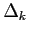
is the radius of the
-dimensional sphere of trust (Nocedal and Wright, 1999). The solution sought for each iteration of the algorithm is
is the step taken by the algorithm and 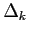
is the radius of the
-dimensional sphere of trust (Nocedal and Wright, 1999). The solution sought for each iteration of the algorithm is
where 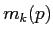
is the quadratic model,
is a positive definite matrix which can be the true Hessian as in the Newton model or an approximation such as the BFGS matrix, and
 is the Euclidean norm of
is the Euclidean norm of  . The trust region radius
is modified dynamically during optimisation - if the quadratic model is found to be a poor representation of the space the radius is decreased whereas if the quadratic model is found to be reasonable the radius is increased to allow larger, more efficient steps to be taken.
. The trust region radius
is modified dynamically during optimisation - if the quadratic model is found to be a poor representation of the space the radius is decreased whereas if the quadratic model is found to be reasonable the radius is increased to allow larger, more efficient steps to be taken.
The Cauchy point algorithm is similar in concept to the steepest descent line search algorithm. The Cauchy point is the point lying on the gradient which minimises the quadratic model subject to the step being within the trust region. By iteratively finding the Cauchy point the local minimum can be found. The convergence of the technique is inefficient, being similar to that of the steepest descent algorithm.
In changing the trust region radius the exact solutions to (6.30) map out a curved trajectory which starts parallel to the gradient for small radii. The end of the trajectory, which occurs for radii greater than the step length, is the bottom of the quadratic model. The dogleg algorithm attempts to follow a similar path by first finding the minimum along the gradient and then finding the minimum along a trajectory from the current point to the bottom of the quadratic model. The minimum along the second path is either the trust region boundary or the quadratic solution. The matrix of (6.30) can be the BFGS matrix, the unmodified Hessian, or a Hessian modified to be positive definite.
Another trust region algorithm is Steihaug's modified conjugate gradient approach (Steihaug, 1983). For each step an iterative technique is used which is almost identical to the standard conjugate gradient procedure except for two additional termination conditions. The first is if the next step is outside the trust region, the second is if a direction of zero or negative curvature is encountered.
An almost exact solution to (6.30) can be found using an algorithm described in Nocedal and Wright (1999). This exact trust region algorithm aims to precisely find the minimum of the quadratic model 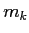 of the space within the trust region . Any matrix can be used to construct the quadratic model. However, the technique is computationally expensive.
The conjugate gradient algorithm (CG) was originally designed as a mathematical technique for solving a large system of linear equations Hestenes and Stiefel (1952), but was later adapted to solving nonlinear optimisation problems (Fletcher and Reeves, 1964). The technique loops over a set of directions 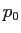
,  ,
,  ,
,  which are all conjugate to the Hessian (Nocedal and Wright, 1999), a property defined as
which are all conjugate to the Hessian (Nocedal and Wright, 1999), a property defined as
| 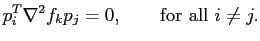 | (theparentequation.30) |
By performing line searches over all directions  the solution to the quadratic model (6.27) of the position
the solution to the quadratic model (6.27) of the position  will be found in
or less iterations of the CG algorithm where
is the total number of parameters in the model. The technique performs well on large problems with many parameters as no matrices are calculated or stored. The algorithms perform better than the steepest descent method and preconditioning of the system is used to improve optimisation. A number of preconditioned techniques will be investigated including the Fletcher-Reeves algorithm which was the original conjugate gradient optimisation technique (Fletcher and Reeves, 1964), the Polak-Ribière method (Polak and Ribière, 1969), a modified Polak-Ribière method called the Polak-Ribière + method (Nocedal and Wright, 1999), and the Hestenes-Stiefel algorithm which originates from a formula in Hestenes and Stiefel (1952). As a line search is performed to find the minimum along each conjugate direction both the backtracking and Moré and Thuente auxiliary step-length selection algorithms will be tested with the CG algorithms.
will be found in
or less iterations of the CG algorithm where
is the total number of parameters in the model. The technique performs well on large problems with many parameters as no matrices are calculated or stored. The algorithms perform better than the steepest descent method and preconditioning of the system is used to improve optimisation. A number of preconditioned techniques will be investigated including the Fletcher-Reeves algorithm which was the original conjugate gradient optimisation technique (Fletcher and Reeves, 1964), the Polak-Ribière method (Polak and Ribière, 1969), a modified Polak-Ribière method called the Polak-Ribière + method (Nocedal and Wright, 1999), and the Hestenes-Stiefel algorithm which originates from a formula in Hestenes and Stiefel (1952). As a line search is performed to find the minimum along each conjugate direction both the backtracking and Moré and Thuente auxiliary step-length selection algorithms will be tested with the CG algorithms.
The Newton search direction, used in both the line search and trust region methods, is dependent on the Hessian being positive definite for the quadratic model to be convex so that the search direction points sufficiently downhill. This is not always the case as saddle points and other non-quadratic features of the space can be problematic. Two classes of algorithms can be used to handle this situation. The first involves using the conjugate gradient method as a sub-algorithm for solving the Newton problem for the step . The Newton-CG line search algorithm described above is one such example. The second class involves modifying the Hessian prior to, or at the same time as, finding the Newton step to guarantee that the replacement matrix is positive definite. The convexity of is ensured by its eigenvalues all being positive. The performance of two of these methods within the model-free space will be investigated.
The first modification uses the Cholesky factorisation of the matrix
, initialised to the true Hessian, to test for convexity (Algorithm 6.3 of Nocedal and Wright (1999)). If factorisation fails the matrix is not positive definite and a constant 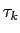
times the identity matrix 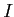
is then added to
. The constant originates from the Robbins norm of the Hessian
 and is steadily increased until the factorisation is successful. The resultant Cholesky lower triangular matrix 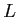
can then be used to find the approximate Newton direction. If
is too large the convergence of this technique can approach that of the steepest descent algorithm.
and is steadily increased until the factorisation is successful. The resultant Cholesky lower triangular matrix 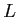
can then be used to find the approximate Newton direction. If
is too large the convergence of this technique can approach that of the steepest descent algorithm.
The second method is the Gill, Murray, and Wright (GMW) algorithm (Gill et al., 1981) which modifies the Hessian during the execution of the Cholesky factorisation
 , where
is a lower triangular matrix and
, where
is a lower triangular matrix and  is a diagonal matrix. Only a single factorisation is required. As rows and columns are interchanged during the algorithm the technique may be slow for large problems such as the optimisation of the model-free parameters of all residues together with the diffusion tensor parameters. The rate of convergence of the technique is quadratic.
is a diagonal matrix. Only a single factorisation is required. As rows and columns are interchanged during the algorithm the technique may be slow for large problems such as the optimisation of the model-free parameters of all residues together with the diffusion tensor parameters. The rate of convergence of the technique is quadratic.
Two other optimisation algorithms which cannot be classified within line search, trust region, or conjugate gradient categories will also be investigated. The first is the well known simplex optimisation algorithm. The technique is often used as the only the function value is employed and hence the derivation of the gradient and Hessian can be avoided. The simplex is created as an
-dimensional geometric object with  vertices. The first vertex is the starting position. Each of the other
vertices are created by shifting the starting position by a small amount parallel to one of unit vectors defining the coordinate system of the space. Four simple rules are used to move the simplex through the space: reflection, extension, contraction, and a shrinkage of the entire simplex. The result of these movements is that the simplex moves in an ameoboid-like fashion downhill, shrinking to pass through tight gaps and expanding to quickly move through non-convoluted space, eventually finding the minimum.
vertices. The first vertex is the starting position. Each of the other
vertices are created by shifting the starting position by a small amount parallel to one of unit vectors defining the coordinate system of the space. Four simple rules are used to move the simplex through the space: reflection, extension, contraction, and a shrinkage of the entire simplex. The result of these movements is that the simplex moves in an ameoboid-like fashion downhill, shrinking to pass through tight gaps and expanding to quickly move through non-convoluted space, eventually finding the minimum.
Key to these four movements is the pivot point, the centre of the face created by the vertices with the lowest function values. The first movement is a reflection - the vertex with the greatest function value is reflected through the pivot point on the opposite face of the simplex. If the function value at this new position is less than all others the simplex is allowed to extend - the point is moved along the line to twice the distance between the current position and the pivot point. Otherwise if the function value is greater than the second highest value but less than the highest value, the reflected simplex is contracted. The reflected point is moved to be closer to the simplex, its position being half way between the reflected position and the pivot point. Otherwise if the function value at the reflected point is greater than all other vertices, then the original simplex is contracted - the highest vertex is moved to a position half way between the current position and the pivot point. Finally if none of these four movements yield an improvement, then the simplex is shrunk halfway towards the vertex with the lowest function value.
The other algorithm is the commonly used Levenberg-Marquardt algorithm (Marquardt, 1963; Levenberg, 1944) which is implemented in Modelfree4, Dasha, and Tensor2. This technique is designed for least-squares problems to which the chi-squared equation (6.25) belongs. The key to the algorithm is the replacement of the Hessian with the Levenberg-Marquardt matrix
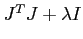
, where  is the Jacobian of the system calculated as the matrix of partial derivatives of the residuals,
is the Jacobian of the system calculated as the matrix of partial derivatives of the residuals,
 is a factor related to the trust-region radius, and
is the identity matrix. The algorithm is conceptually allied to the trust region methods and its performance varies finely between that of the steepest descent and the pure Newton step. When far from the minimum
is a factor related to the trust-region radius, and
is the identity matrix. The algorithm is conceptually allied to the trust region methods and its performance varies finely between that of the steepest descent and the pure Newton step. When far from the minimum  is large and the algorithm takes steps close to the gradient; when in vicinity of the minimum
is large and the algorithm takes steps close to the gradient; when in vicinity of the minimum  heads towards zero and the steps taken approximate the Newton direction. Hence the algorithm avoids the problems of the Newton algorithm when non-convex curvature is encountered and approximates the Newton step in convex regions of the space.
heads towards zero and the steps taken approximate the Newton direction. Hence the algorithm avoids the problems of the Newton algorithm when non-convex curvature is encountered and approximates the Newton step in convex regions of the space.
To guarantee that the minimum will still be reached the implementation of constraints limiting the parameter values together with optimisation algorithms is not a triviality. For this to occur the space and its boundaries must remain smooth thereby allowing the algorithm to move along the boundary to either find the minimum along the limit or to slide along the limit and then move back into the centre of the constrained space once the curvature allows it. One of the most powerful approaches is the Method of Multipliers (Nocedal and Wright, 1999), also known as the Augmented Lagrangian. Instead of a single optimisation the algorithm is iterative with each iteration consisting of an independent unconstrained minimisation on a sequentially modified space. When inside the limits the function value is unchanged but when outside a penalty, which is proportional to the distance outside the limit, is added to the function value. This penalty, which is based on the Lagrange multipliers, is smooth and hence the gradient and Hessian are continuous at and beyond the constraints. For each iteration of the Method of Multipliers the penalty is increased until it becomes impossible for the parameter vector to be in violation of the limits. This approach allows the parameter vector  outside the limits yet the successive iterations ensure that the final results will not be in violation of the constraint.
outside the limits yet the successive iterations ensure that the final results will not be in violation of the constraint.
For inequality constraints, each iteration of the Method of Multipliers attempts to solve the quadratic sub-problem
where the function 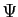 is defined as
 |
(theparentequation.32) |
In (6.32),  is the parameter vector;
is the parameter vector;
 is the Augmented Lagrangian function;
is the current iteration of the Method of Multipliers;
is the Augmented Lagrangian function;
is the current iteration of the Method of Multipliers;  are the Lagrange multipliers which are positive factors such that, at the minimum
are the Lagrange multipliers which are positive factors such that, at the minimum
 ,
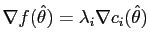
;
,
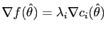
;  is the penalty parameter which decreases to zero as
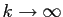
;
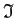
is the set of inequality constraints; and
is an individual constraint value. The Lagrange multipliers are updated using the formula
is the penalty parameter which decreases to zero as
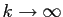
;
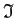
is the set of inequality constraints; and
is an individual constraint value. The Lagrange multipliers are updated using the formula
| (theparentequation.33) |
The gradient of the Augmented Lagrangian is
 |
(theparentequation.34) |
and the Hessian is
| (theparentequation.35) |
The Augmented Lagrangian algorithm can accept any set of three arbitrary constraint functions  ,
, and
. When given the current parameter values
,
, and
. When given the current parameter values  returns a vector of constraint values whereby each position corresponds to one of the model parameters. The constraint is defined as
returns a vector of constraint values whereby each position corresponds to one of the model parameters. The constraint is defined as
 . The function
returns the matrix of constraint gradients and
is the constraint Hessian function which should return the 3D matrix of constraint Hessians.
. The function
returns the matrix of constraint gradients and
is the constraint Hessian function which should return the 3D matrix of constraint Hessians.
A more specific set of constraints accepted by the Method of Multipliers are bound constraints. These are defined by the function
| (theparentequation.36) |
where
and  are the vectors of lower and upper bounds respectively and
are the vectors of lower and upper bounds respectively and  is the parameter vector. For example for model-free model
is the parameter vector. For example for model-free model  to place lower and upper bounds on the order parameter and lower bounds on the correlation time and chemical exchange parameters, the vectors are
to place lower and upper bounds on the order parameter and lower bounds on the correlation time and chemical exchange parameters, the vectors are
| (theparentequation.37) |
The default setting in the program relax is to use linear constraints which are defined as
where
is an
 matrix where the rows are the transposed vectors
of length
; the elements of
are the coefficients of the model parameters;
matrix where the rows are the transposed vectors
of length
; the elements of
are the coefficients of the model parameters;  is the vector of model parameters of dimension
;
is the vector of model parameters of dimension
;  is the vector of scalars of dimension
is the vector of scalars of dimension  ;
;  is the number of constraints; and
is the number of model parameters. For model-free analysis, linear constraints are the most useful type of constraint as the correlation time
is the number of constraints; and
is the number of model parameters. For model-free analysis, linear constraints are the most useful type of constraint as the correlation time  can be restricted to being less than
can be restricted to being less than  by using the inequality
by using the inequality
 .
.
In rearranging (6.39) the linear constraint function  returns the vector
returns the vector
 . Because of the linearity of the constraints the gradient and Hessian are greatly simplified. The gradient
is simply the matrix
and the Hessian
is zero. For the parameters specific to individual residues the linear constraints in the notation of (6.39) are
. Because of the linearity of the constraints the gradient and Hessian are greatly simplified. The gradient
is simply the matrix
and the Hessian
is zero. For the parameters specific to individual residues the linear constraints in the notation of (6.39) are
 |
(theparentequation.39) |
Through the isolation of each individual element, the constraints can be see to be equivalent to
To prevent the computationally expensive optimisation of failed models in which the internal correlation times minimise to infinity (d'Auvergne and Gooley, 2006), the constraint was implemented. When the global correlation time is fixed the constraints in the matrix notation of (6.39) are
| (theparentequation.41) |
However when the global correlation time  is one of the parameters being optimised the constraints become
is one of the parameters being optimised the constraints become
| (theparentequation.42) |
For the parameters of the diffusion tensor the constraints utilised are
 |
which in the matrix notation of (6.39) become
| (theparentequation.44) |
The upper limit of 200 ns on  prevents the parameter from heading towards infinity when model failure occurs (see Chapter
prevents the parameter from heading towards infinity when model failure occurs (see Chapter ![[*]](crossref.png) ). This can significantly decrease the computation time. To isolate the prolate spheroid the constraint
). This can significantly decrease the computation time. To isolate the prolate spheroid the constraint
| (theparentequation.45) |
is used whereas to isolate the oblate spheroid the constraint used is
| (theparentequation.46) |
Dependent on the model optimised, the matrix
and vector  are constructed from combinations of the above linear constraints.
are constructed from combinations of the above linear constraints.
Model scaling can have a significant effect on the optimisation algorithm - a poorly scaled model can cause certain techniques to fail. When two parameters of the model lie on very different numeric scales the model is said to be poorly scaled. For example in model-free analysis the order of magnitude of the order parameters is one whereas for the internal correlation times the order of magnitude is between to . Most effected are the trust region algorithms - the multidimensional sphere of trust will either be completely ineffective against the correlation time parameters or severely restrict optimisation in the order parameter dimensions. In model-free analysis the significant scaling disparity can even cause failure of optimisation due to amplified effects of machine precision. Therefore the model parameters need to be scaled.
This can be done by supplying the optimisation algorithm with the scaled rather than unscaled parameters. When the chi-squared function, gradient, and Hessian are called the vector is then premultiplied with a diagonal matrix in which the diagonal elements are the scaling factors. For the model-free analysis the scaling factor of one was used for the order parameter and a scaling factor of
was used for the correlation times. The  parameter was scaled to be the chemical exchange rate of the first field strength. The scaling matrix for the parameters {
parameter was scaled to be the chemical exchange rate of the first field strength. The scaling matrix for the parameters { ,
,  ,
,  ,
,  ,
,  ,
,  ,
,  ,
,
,
,  } of individual residues is
} of individual residues is
| (theparentequation.47) |
For the ellipsoidal diffusion parameters { ,
,
 ,
,
 ,
,  ,
,  ,
,  } the scaling matrix is
} the scaling matrix is
 |
(theparentequation.48) |
For the spheroidal diffusion parameters { ,
,
 ,
,  ,
,  } the scaling matrix is
} the scaling matrix is
 |
(theparentequation.49) |